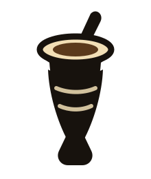

Alianças 2v2
Jogado em duplas. Coordene-se silenciosamente com seu parceiro do outro lado da mesa usando expressões faciais tradicionais.

Acampamento Farroupilha Campeonato de Truco
Campeonato de Truco
O lendário jogo latino-americano de blefe, coragem e cálculo rápido.
Domine as manilhas e comande a mesa.
O Truco é mais que um jogo de sorte; é um campo de batalha tático de guerra psicológica, onde uma mão fraca pode vencer uma mão forte pela pura confiança.
Jogado em duplas. Coordene-se silenciosamente com seu parceiro do outro lado da mesa usando expressões faciais tradicionais.
Jogado com um baralho tradicional de 40 cartas (sem 8, 9 ou coringas). Cada carta tem um peso único na batalha.
Ganhe pontos ao longo de várias mãos. A primeira equipe a somar 30 pontos conquista a honra máxima da mesa.
Diferente dos jogos tradicionais, as cartas do Truco não seguem a ordem numérica. Memorizar essa hierarquia incomum é a chave para sobreviver às rodadas.
As manilhas no topo são as cartas únicas do jogo; os 3 e os 2 também são ativos críticos.
Uma mão consiste em até três cartas jogadas em sequência por cada jogador. Vencer rodadas cedo dá vantagem, mas segurar a carta certa para a hora certa é o que decide o jogo.
Cada jogador recebe 3 cartas, avaliadas para Envido e Flor.
Vence a mão quem ganhar 2 das 3 rodadas.
O vencedor leva os pontos em disputa (ou mais, se houve Truco).
A qualquer momento durante uma rodada, você pode cantar Truco! para aumentar a aposta. A escada de escalada é um teste de nervos.
Os pontos são declarados e contados antes de as rodadas de cartas começarem.
Se você receber as três cartas do mesmo naipe, anuncie imediatamente "Flor!" antes de a rodada começar. A Flor vale 3 pontos (ou 6 com Contra Flor) e anula qualquer Envido.
| Chamada / Aposta | Pontos | Contexto |
|---|---|---|
| Truco (Aceito) | 2 pontos | Aposta base pela vitória das rodadas |
| Retruco (Aceito) | 3 pontos | Contra-aposta ao Truco |
| Vale 4 (Aceito) | 4 pontos | Escalada final da aposta |
| Truco / Retruco (Recusado) | 1/2 pontos | Pontos vão para quem chamou |
| Envido (Aceito) | 2 pontos | Melhor combinação de naipe |
| Real Envido | 3 pontos | Aposta elevada na comparação de par |
| Falta Envido | Variável | Quem vence leva a partida |
| Flor (Anunciada) | 3 pontos | Três cartas do mesmo naipe |
Agora que você conhece a hierarquia, as apostas e os sinais secretos, está pronto para reivindicar seu lugar à mesa.